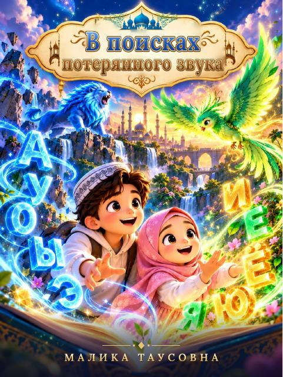
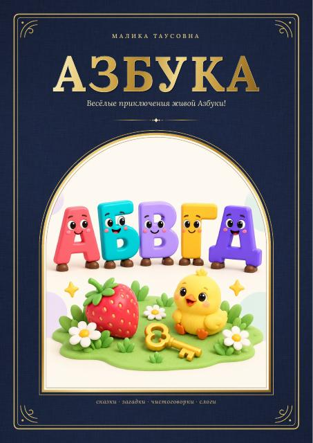

В поисках потерянного звука
Книга Малики Таусовны.
Прописи и книги для дополнительных занятий дома.

Книга Малики Таусовны.

Весёлые приключения живой Азбуки: сказки, загадки, чистоговорки и слоги.
Материалы для тренировки письма и аккуратного почерка.
Файлы готовятся к публикации.